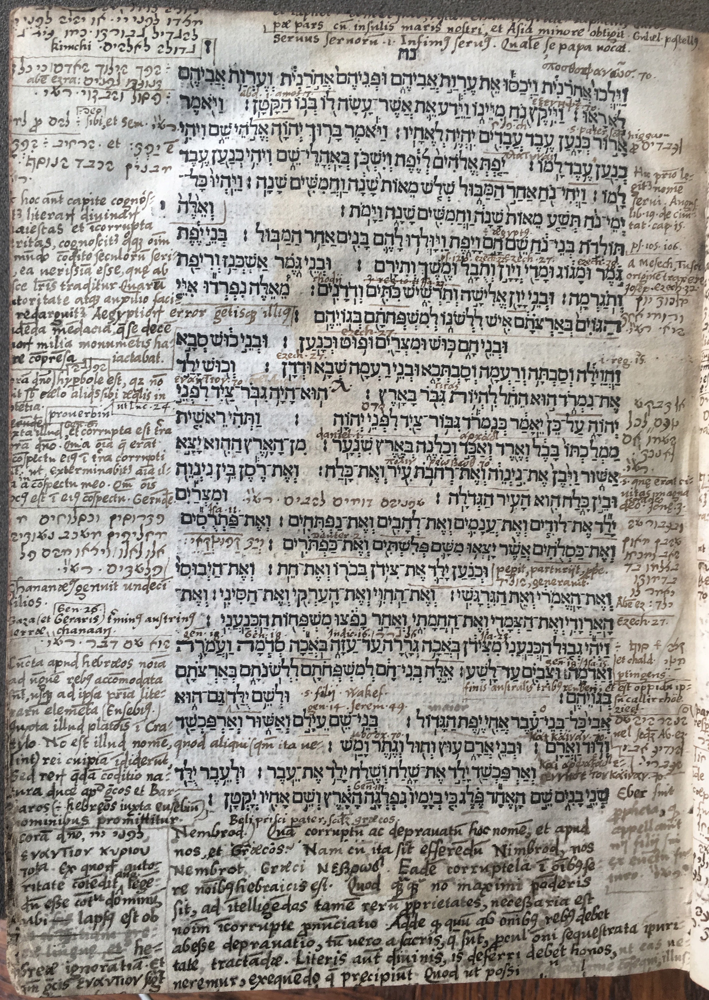

“He was a mighty hunter before the Lord.” This means that he sacrificed his game before the Lord or that he was before the Lord in order to magnify his greatness, like “a great city unto the Lord,” Kimchi
י [הוא היה גבור ציד לפני יי ר"ל שהיה מקריב] י
מצידו לפני יי או יהיה לפני יי להגדיל גבורתו כמו עיר גדולה לאלהים Kimchi
This is from Kimchi’s Sefer Shorashim, although the verse under discussion appears about halfway down the page, so it’s unclear why this comment is in the upper corner. Perhaps this indicates that the comment was a later layer, and this is where space remained. Kimchi is giving two possibilities for what לפני ה׳ (before the Lord) means: one is that Nimrod gave his hunting “to God”; the other that the phrase is an intensifier and means “really great.” This is one of several examples of several of Wakefield’s interest in the word לפני.
The opposite of how people walk, which is to move forward
הפך הלוך האדם, כי כל תנועתו לפנים Aben Ezra
This is a quotation from Ibn Ezra’s commentary on Genesis 9:23.
The invalid and disgraced one Rashi
פסול והבזוי רש"י
This is a quotation from Rashi’s commentary on Genesis 9:24. Rashi explains that his “small son,” which one would think means “younger son,” actually means “invalid” or “degraded.” This comment fixes the textual problem that, based on the order in which the names of his sons are presented in the beginning of the Noah story, one would think that Ham is the middle son, not the youngest.
למו for להם. To him God and to Shem. Rashi
למו pro להם sibi Deo, et Sem. רש״י
Wakefield cites this as Rashi, but it is an idea found rather in Ibn Ezra’s commentary on Genesis 9:26. Given that it is not a direct citation and that Wakefield gives the wrong attribution, this could be indication that Wakefield was working in this case from memory. The comment explains that Ham will be a slave to God (sibi) and also to Shem. The plain reading of the text is that Ham will be a slave to Shem only. The reading offered here adds in that he will also be a slave to God in order to explain why למו is plural. Thus, the comment fixes a textual problem (the singular/plural distinction), while adding to, rather than contradicting, the plain meaning.
הפת means to widen or expand. And יפת is from the “additional heavy paradigm.”
הרחיב / הִפְתָ. et : יַפְתְ est מבנין הכבד הנוסף
Wakefield defines הפת, based on Ibn Ezra’s definition. The first half of the comment is not a direct quotation of ibn Ezra, while the end (מבנין הכבד הנוסף) is. The comment means that the verb (יַפְתְ) is in the הפעיל (causative) form.
From this chapter is known the majesty and incorrupt truth of holy letters. And it is also known that the order of all the years from the creation of the world, which is transmitted by this text, is perfectly true. By its authority and help, the errors of the Egyptians are easily refuted and the shameful lies of that people who boasted that they have ten thousand years contained in their sources.
[D]e hoc autem capite cognos[ci]tur literarum divinarum [m]aiestas et incorrupta [ve]ritas, cognoscitur quoque omnium [a] mundo condito seculorum seri[es] ea verisima esse quae ab [hi]sce litteris traditur. Quarum [a]utoritate atque auxilio faci[le] redarguitur Aegyptiorum error gentisque illius [pu]denda mendacia qui se decem [ann]orum milia monumentis ha[be]re comprehensa iactabat.
This comment appears next to the verse that begins the genealogy after Noah.
Wakefield sees the biblical genealogy as refuting non-biblical chronologies
that date the world as older than the number of years recorded by the Bible since
creation. Although lists of years, dates, and generations pervade the biblical narrative,
the chronology of the Bible covers a particularly short period of time. For Wakefield,
however, the Bible is irrefutable authority, and he understands the difference between
the Bible and other chronologies as the Bible’s refutation of those chronologies rather
than as a contradiction of these sources. The number ten thousand comes from Plato’s Timaeus,
though Wakefield does not cite this. Wakefield’s concern about chronology is a common early
modern one, though he is on the early side to be raising this issue. There were, of course,
challenges to biblical chronology long before Wakefield, and Wakefield joins a long chain of
Christians stretching back to antiquity who defended the world’s short chronology. Most notably,
Saint Augustine had taken up his pen against those who believed Egyptian chronology: “They are
deceived, too, by those highly mendacious documents which profess to give the history of many
thousand years, though, reckoning by the sacred writings, we find that not 6,000 years have yet
passed” (City of God, Book 10). Scholars in the century after Wakefield came up with diverse ways of
answering the challenges posed by the records of ancient Egyptians, Babylonians, Chinese, and Chaldeans,
all of which presented histories that far preceded the traditional date of creation. The French theologian
Isaac La Peyrère and the Dutch linguist Francis Lodwick, for example, believed in pre-Adamism, positing that
ancient civilizations had existed before the creation of Adam and Eve. Others, such as the Dutch scholar Isaac Vossius,
used the chronology of the Septuagint, which was longer than that of the Masoretic text and thus provided more space for
other chronologies. Wakefield notably refrained from these belief systems and remained steadfast to the traditional
timeline of the Hebrew Bible. For more on challenges to biblical chronology see David Livingstone, Adam’s Ancestors:
Race, Religion, and the Politics of Human Origins (Baltimore: Johns Hopkins University Press, 2008) and Anthony Grafton,
“Isaac Vossius, Chronologer,” in Isaac Vossius (1618-1689) Between Science and Scholarship, ed. Eric Jorink and Dirk van Miert (Leiden: Brill, 2012).
[Su]pra domino hyperbole הפלגה est, quod non [fu]it sub caelo aliquis sibi aequalis in potentia. [G]erunden
[iu]xta illud Gen 6 et corrupta est terra [su]pra domino. Quia omnia quae erant [in] conspectu eius in terra corrupti [...], ut exterminabitur anima illa a in conspectu meo. Quom omnis locus est in eius conspectu. Gerunden.
“Above the Lord” is hyperbolic because there was no one under heaven equal in strength to him. According to that Genesis 6 “the land was corrupt before the Lord” [Genesis 6:11] because all things that were in his sight in the earth were corrupt, and as “that soul will be exterminated from my sight” [Leviticus 22:3] since every place is in his sight. Nachmanides.
This is a Latin translation of Nachmanides on Genesis 10:11. Nachmanides explains that לפני ה׳ means “the most possible of something.” Thus, “Nimrod was hunter before the Lord” means that he was the most talented hunter, just as “the earth was corrupt before the Lord” in Genesis 6 means that the entirety of the earth was corrupt and “that soul shall be cut off before me” in Leviticus means that the punishment for certain types of impurity is the cutting off of a person’s soul from all places.
As Luke 24
ut Luc 24
This is a reference to Luke 24:19, which states that Jesus “was a prophet, powerful in word and deed before God and all the people.” It is interesting that Wakefield brings a non-Hebrew source here to prove the meaning of “before God,” indicating that he thought of this not as a specific philological question about the Hebrew phrase but rather about the concept of “before God” in general. It is also possible that Wakefield believed that the Greek of the New Testament had Semitic features.
Proverb
Proverbium
This comment, indicating a proverb, explains why the text says “as it is said” (As it is said, Like Nimrod, a mighty hunter before the Lord).
Patrusim and Kasluchim are intimate with each other’s wives, and the Philistines are descended from them. Rashi
פתרוסים וכסלוחים מחליפים משכב נשותים אלו לאלו ויצאו מהם פלשתים רש"י
This is from Rashi’s comment on Genesis 10:14. Rashi is trying to give an explanation for why the text says that the Philistines are descended from both the Patrusim and Kasluchim.
Canaan begat eleven sons.
Chananaeus genuit undecim filios.
This note summarizes Genesis 10:15-17, which list the eleven sons of Canaan.
Gaza and Gerrara (Gen. 26) are the southern border of the land of Canaan.
Gaza (et Geraris) Gen. 26 terminus austrinus terrae chanaan.
Genesis 26 is the story of Isaac going to Avimelech, the king of Gerar.
It is a noun. Rashi
הוא שם דבר רש"י
This comment is from Rashi on Genesis 10:19. Rashi is explaining that the word באכה is a noun, meaning something like “the approach to” the boundary. Interestingly, the word הוא does not appear in Rashi and seems instead to be Wakefield’s addition. The fact that Wakefield adds a word that does not change the meaning could be indication that he is quoting from memory.
All names among the Hebrews are precisely accommodated to things, down to the very letters of the alphabet (Eusebius). According to Plato's Cratylus, names are not things that some people ascribed to some things (since that is what they would like) [i.e. names are not arbitrary]. But among the Greeks and the Barbarians (that is, the Hebrews according to Eusebius), a certain condition of things, is put forth by nouns with nature as the guide.
Cuncta apud hebraeos nomina, ad unguem rebus acconmodata sunt usque ad ipsa prima literarum elementa (Eusebius). Iuxta illud platonis in Cratylo. Non est illud nomen, quod aliqui (quum ita velint) rei cuipiam indiderunt. Sed rerum quaedam conditio natura duce apud graecos et Bar[b]arios ([id est] hebreos iuxta Eusebium [n]ominibus promittitur.
Wakefield explains that in both Greek and Barbarian languages, names are ascribed by nature and not arbitrarily.
They are meaningful down to the letter. Wakefield reads Eusebius’s definition of Jews as barbarians into Plato’s
account of cratylism. Implicitly, Wakefield’s comment here justifies why this long list of names and genealogy
matters. That is, given that Hebrew names signify perfectly and convey the true essence of a thing, it makes
sense that the biblical text spends time listing dozens of names from each generation after the flood. A belief
that Hebrew signifies perfectly is distinct from a belief in Christian Kabbalah in which every letter and word
is meaningful, but there are similarities between the two ideas. Compare this comment with, for example, Johanne’s
Reuchlin’s statement: “This only is the area of real contemplation, where individual words, individual mysteries,
syllables, diacritic and punctuation marks are full of secret meaning” (Hic est solus uerae contemplationis campus,
cuius singula uerba, singula sunt sacramenta, & singuli sermones, syllabae, apices, punctaque eius plena sunt arcanis
sensibus, non tantum nobis autoribus, uerum etiam christianis attestantibus”) (Johann Reuchlin, On the Art of Kabbalah,
De arte cabalistica, tr. Martin and Sarah Goodman, (Lincoln: University of Nebraska Press, 1983 ), 117).
“In the presence of the Lord” [But] “against the Lord” in the Septuagint. By their [Septuagint translators’] authority, Augustine argues that we should read “against the Lord.” He has gone wrong on account of ignorance of Hebrew. And in Greek ἐναντίον means “against.”
Coram domino לפני יי, ἐναντίον κυρίου, 70ta [Septuiginta] Ex quorum autoritate contendit aug. [Augustinus] legendum esse contra dominum, ubi lapsus est ob hebraeae ignorantiam. Et contra graecis ἐναντίον significat.
Here Wakefield attacks the Septuagint translation and also Augustine for his lack of Hebrew knowledge. This is an example of Wakefield’s persistent interest in the word לפני. This comment is placed at a significant distance from the line about which it comments, perhaps indicating it was added as part of a later layer.
Father of the ancient Belus that is the Greeks. Nembrod: How corrupt and depraved is this name, both in Latin and in Greek. For while it should be pronounced “Nimbrod” we pronounced it “Nembrot” and the Greeks “Νεβρωδ.” The same corruption is in almost all Hebrew names. Although this is not of the greatest weight, nevertheless, for understanding the properties of things, it is necessary to have the uncorrupted pronunciation of names. In addition, while corruption should be absent from all matters, it should be especially absent from sacred ones, which should be handled with all impurity kept carefully very far away. But divine letters should have this honor given to them, that we venerate them by carrying out what they teach, so that we can do this…
Beli prisci pater scilicet graecos. Nembrod) Quam corruptum ac depravatum hoc nomen, et apud nos, et Graecos. Nam cum ita sit efferendum Nimbrod, nos Nembrot. Graeci Nebros. Eadem corruptela in omnibus ferre nominibus hebraicis est. Quod quamquam non maximi ponderis sit, ad intelligendas tamen rerum proprietates, necessaria est nominum incorrupte pronunciatio. Adde quod quum ab omnibus rebus debet abesse depravatio, tum vero a sacris, quae sunt procul omni sequestrata impuritate tractandae. Literis autem divinis, is deferri debet honos, ut eas veneremur, exequendo, quae precipiunt. Quod ut possimus [...] consequi illus…
This comment highlights Wakefield’s interest in the importance of names. Given his belief that Hebrew names signify perfectly, the question of how Nimrod’s name is pronounced is crucial. Furthermore, because Nimrod is described as “a mighty hunter before the Lord,” Wakefield takes a particular interest in him. For more on later interpretive traditions about Nimrod that may have contributed to Wakefield’s interest, see K. van der Toorn and P. W. van der Horst, “Nimrod Before and After the Bible,” The Harvard Theological Review 83.1 (1990): 1-29.
Ever was a prophet who called his son by a name of a future event. Rashi
Eber fuit propheta, qui appellavit nomen filii sui ex eventu futuro רש״י
This is a translation of Rashi on Genesis 10:25. The text says that Ever’s son was named Peleg because in his days the earth was divided (niflaga, from the same root as Peleg, referring to the dispersion after the Tower of Babel). Rashi explains how Ever was able to name his son using a reference to an event that had yet to take place.
And Arpachshad begot Kainan Septuagint
καὶ Αρφαξαδ ἐγέννησεν τὸν Καιναν 70
Wakefield here notes a discrepancy between the Hebrew text and the Septuagint: the Hebrew reads that Arpachshad begot Shelach and Shelach begot Ever, whereas the Septuagint reads that Arpachshad begot Keinan who begot Shelach who begot Ever.
“The river was Shem” or according to Ibn Ezra, “to inform that he was the father of the Hebrews.”
הנהר היה שם vel secundum Ab. Ez. להודיע אבי העברים
The first part, though uncited, is the opinion of Rashi. Wakefield only cites half of Rashi’s comment. In the full context, Rashi explains that Shem is the father of all of the people “on the other side (“ever”) of the river. The second part is Ibn Ezra on Genesis 10:21.
And Kainan Septuagint
καὶ Καιναν 70.
This is noting a discrepancy between the Hebrew text and the Septuagint of Genesis 10:22, where the Septuagint adds “and Kainan,” which the Hebrew omits.
The southern border of Reuben is the town Callirrhoe. Ziegler.
finis australis tribus reuben, et est oppidum ipsum callirrhoe Ziegl.
Wakefield cites Jacob Ziegler, a contemporaneous scholar known for his work on geography.
End and edge, and in Aramaic מטי (reaching), protingens (reaching)
קצה & סוף et chaldaice מטי
Protingens
This references Rashi’s comment on Genesis 10:19: כל גבול שבמקרא לשון סוף וקצה (Every use of gevul (border) denotes an end or edge). “Protingens” is brought here as a Latin translation of the Aramaic מטי, both meaning “reach” or “stretch.”
Ezekiel 27
Ezech. 27
Arvad is also mentioned in Ezekiel 27:8 and 11
Because the child is from the strength and power of the father and is in his likeness and image, it says that he begat
ובעבור שהבן מאון האב ומכוחו בצלמו בדמותו, יאמר לו ילד Aben Ez
This is a quotation from Ibn Ezra’s comment on Genesis 10:14, which explains that the text says that Mitzrayim (a man) begat (literally “gave birth”) to various children because of the father’s role in the formation of the fetus.
It was certainly a big city to God (before God) Jonah 3
Scilicet quae erat civitas magna deo coram deo Jonae 3
In the verse, Resen is described as “a big city” between Ninveh and Kalach. Wakefield points out that Nineveh is described as “a big city to/before God” in Jonah 3.
Do not attempt to seek a meaning for all of the names if it is not written Rashi
אל תבקש טעם לכל השמות אם לא נכתב רש"י
Wakefield cites this as Rashi, but it’s actually from Ibn Ezra’s comment on the name Nimrod in Genesis 10:8. This mistaken citation could be indication that Wakefield was working from memory. This comment also goes back to Wakefield’s interest in Nimrod and names.
1 Kings 15
i reg. 15
It’s not clear what this references. None of the names mentioned in these verses appear in this chapter of Kings. It is possible that this is a reference to 1 Kings 15:3, which talks about the sins that Jeroboam committed לפניו (“before” his father), returning to Wakefield’s interest with the word לפני.
The Greeks and Romans are one kingdom Rashi
מלכות יון ורומי אחת היא רש"י
Wakefield cites this as Rashi but it’s actually from Ibn Ezra’s commentary on Genesis 10:4. This is based on Ibn Ezra’s interpretation of Daniel, where the Kittim are identified as the Romans. Because they are the son of Javan, as stated in this verse, Javan (Greece) and the Kittim (Romans) must be one nation.
The Tuscans originated from Meshech. Josephus, Ezekiel 32.
A Mesech, Tusci originem traxere Josep. Ezech 32
Ezekiel 32:26 refers to “Meshech Tuval,” linking Meshech and Tuval, and thus the Tuscans to Meshech, which is also an idea in Josephus.
Psalms 105, 106
Ps. 105. 106
Psalms 105:23 and 27 and 106:22 refers to “the land of Ham.”
Here is the first time the name “servant” is read. Augustine Book 19, The City [of God], chapter 15
Hic primo legitur nomen servi Augus. libro 19 de civitat cap. 15
Augustine writes there that “servant” (or “slave”) is used for the first time in the Noah story and not in the creation story when discussing dominion because slavery is from sin, not nature.
That is, “father,” according to [...]
Scilicet pater secundum [...]
Part of this comment is illegible, but Wakefield seems to be commenting on the fact that Canaan is the one cursed, rather than Ham, his father, who committed the wrongdoing.
For “slaves”
pro עבדים
This comment is difficult to understand. It may simply be a summary of the story, thus asserting that Canaan will fill the role of a slave.
Backward Septuagint
ὀπισθοφανῶς 70
This is the Septuagint’s translation and is likely included here to explain why the text repeats אחרנית.
“Slave of slaves,” that is, a very lowly slave. As the pope calls himself.
Servuus servorum id est Infimus servus. Qualem se papa vocat.
Here Wakefield connects Ham being referred to as the “slave of slaves” to his brother to the Pope’s title of “servus servorum Dei”
Asia falls to Shem and his people, Africa falls to the people of Ham, and part of Europe along with the islands of our sea [i.e. Mediterranean islands] and Asia Minor falls to Japheth. Guillaume Postel
[Semo et suis, Asia, Chameticis Africa, Iapeticis Eu]ropae pars cum insulis maris nostri, et Asia minore obtigit. Guilielmi Postelli
This is a paraphrase from Guillaume Postel’s De originibus seu de hebraicae linguae et gentis antiquitate. Postel, a French scholar and prominent Christian Kabbalist, took particular interest in the story of the biblical flood, which represented for him the original unity of humanity. He was also interested in the postdiluvian generations and in proving that the historical Noah and his sons were prior to all forms of paganism (William J. Bouwsma, Concordia Mundi: The Career and Thought of Guillaume Postel, 1510-1581 (Cambridge: Harvard University Press, 1957), 252-9). In this comment, Postel refers the ancient tradition of mapping biblical genealogies onto geographic locations. As early as the first century, Josephus listed the specific geographic areas to which Noah’s descendants traveled. Many Christian scholars, including Isidore of Seville and Jerome, followed Josephus, and Postel’s designations here follows that traditional picture.
Sobered up
ἐξένηψεν
It seems that Wakefield quotes the Greek here to note the difference between the fairly neutral Hebrew “woke up” and the Septuagint’s implication of drunkenness
Obadiah 1, Amos 7
Abd. 1 Amos 7
In Obadiah 1:2 and Amos 7:2 and 5, the word קטן is used, but is vocalized as קָטֹן rather than קָּטָן, as here
Aramaic “laboring”
פלח ch.
Targum Onkelos adds the word פלח (laboring, thus making the phrase “laboring slave he will be”), presumably to fix the problem that slaves can’t have other slaves (which is implied by “slave of slaves”)
Make broad
πλατύναι
This is the Septuagint’s rendering. The verb is optative. Perhaps Wakefield brings the Septuagint to show the similarity with Ibn Ezra’s translation and comment that יפת is from בנין הכבד הנוסף (the additional heavy paradigm, i.e. the causative).
Egyptian
aegyptus
This is written above “Ham,” presumably because Ham is the father of Mitzrayim (the Egyptians)
Ezekiel 38
Ezech 38
Gomer and Magog are mentioned in Ezekiel 38:6 and 2, respectively
Psalms 120, Ezekiel 22, Ezekiel 27
Ps 120, Ezech 22, Ezech 27
Psalms 120:5 mentions Meshech. The reference in Ezekiel is to 22:10, which, like the Genesis narrative, mentions uncovering one’s father’s nakedness. Ezekiel 27 mentions Javan (verses 13 and 19), Tuval (13), Meshech (13), Elisha (7), Tarshish (12 and 25), Kitim (6), and Dodanim (15 and 20).
people of Rhodes
rhodii
There is a strong tradition of Dodanim being from Rhodes: the Septuagint renders the word as “Roidoi,” and some Hebrew manuscripts have “Rodanim.”
3 Kings 10 and Isaiah 23.
3 reg 10 et Isa. 23
This seems to be a mistake and should probably say 3 Kings 1, as 1 Chronicles 1 mentions Kitim. Isaiah 23:1 and 12 also mention Kitim.
Ezekiel 27
Ezech 27
Ezekiel 27:10 mentions Put and verse 7 mentions Mitzrayim.
Ezekiel 27
Ezech 27
Ezekiel 27:22 mentions Raamah, 22 and 23 mention Sheva, and 15 and 20 mention Dedan
Before/against
ἐναντίον
This is a quotation of the Septuagint’s rendering of לפני.
Giants/mighty ones
γίγας
This is the Septuagint’s rendering of גבור.
Before
קדם
This is the Aramaic translation of לפני, which is how the word is rendered by both Targum Onkelos and Jonathan.
Akkad
Αρχαδ
Wakefield may cite the Greek here because of the way use of “ρχ” in the Greek transliteration of the name.
Daniel 1
Daniel i
Shinar is mentioned in Daniel 1:2
Rechovot city Septuagint
πόλιν Ροωβωθ 70
The Septuagint reads Ροωβωθ πόλιν. The order is reversed here because Wakefield has put each word directly above the Hebrew word that it translates.
Their faces were like flames. Rashi
שפניהם דומים להבים רש"י
This comment from Rashi provides an etymology for the Lahavim, by drawing on the similarity to the word from lahav (flame)
This is the Aramaic translation, which is how the word is rendered by Onkelos, thus identifiying the Kaftorim with Cappadocia.
Deuteronomy 2
Deuter 2
The Kaftorim are mentioned in Deuteronomy 2:23
Gave birth, bore, properly, begat or produced
Peperit, parturiit, proprie, הוליד, generavit
Wakefield here explains that ילד, the word used in the verse, means “to give birth to” (as does “peperit” and “partuiit”) but more properly should be understood as Canaan fathering (הוליד or generavit) Tzidon etc. The comment explains why ילד (which implies actually giving birth) rather than הוליד (which implies parentage) is used in describing Canaan (a man).
Isaiah 23
Isa. 23
Isaiah 23:11 mentions Canaan and verses 2, 4, and 12 mention Tzidon
To Gerar
אל גרר
This is from Ibn Ezra’s comment on Genesis 10:19 and explains that the ה suffix indicates directionality.
Judges 16
Iudic. 16
The word עזתה is used in Judges 16:1 and 21. This is thus a reference to Gaza, mentioned in our verse, and is nicely also an example of the ה suffix indicating directionality.
Genesis 18
Gen 18
Sodom is mentioned in Genesis 18: 16, 20, 22, and 26. In particular, 22 contains סדמה with the directional suffix.
Genesis 18
Gen 18
Amora is mentioned in Genesis 18:20
Isaiah 15
Isa. 15
Isaiah 15:9 mentions Adma
Genesis 18
Gen 18
It is not clear what the text here is referencing, other than Sodom and Gemorrah as discussed above.
“Sons,” according to Wakefield
Scilicet filii Wakef.
Wakefield cites himself in this translation. It’s not clear what word exactly he’s translating, since “filii” is a noun and the word that would make most sense is ילד, a verb. Also, usually Wakefield writes his own name when comparing his translation with other people’s, but here he writes only his own interpretation.
Genesis 14
Gen 14
Eilam is mentioned in Genesis 14:1 and 9
Jeremiah 49
Jerem. 49
Eilam is mentioned in Jeremiah 49:34-9.
Mash Septuagint
Μοσοχ 70
This is the Septuagint’s rendering of “Mash.”
Genesis 11
Gen 11
Peleg appears in Genesis 11:16-19, as does the story of the Tower of Babel and the division of the earth, the story referenced as Peleg’s namesake
Big
Maior
As Rashi points out, it is unclear whether the adjective הגדול refers to Japheth or Shem (and thus whether the phrase should be rendered “the brother of Japheth the elder” or “the elder brother of Japheth”). Perhaps Wakefield includes the Latin here to note the ambiguity. Furthermore, “maior” can be rendered as “big in size or status,” rather than “older in age.” Wakefield earlier cited Rashi on Genesis 9:24 as saying that קטן means “invalid or disgraced,” rather than “younger.” Rashi’s comment thus explains that the order of the names of Noah’s sons changes from the previous listing because the ordering is about status, not age. Here, then, Wakefield extends Rashi’s idea from earlier (that “small” refers not to age, as would be the literal reading, but rather to quality of one’s character) to the word “big” as well.

This image of Thomas Wakefield’s copy of Daniel Bomberg’s 1521 Hebrew Bible (Trinity College, Cambridge, Adv.c.1.18) features Wakefield’s annotations on the end of Genesis 9 and the beginning of Genesis 10. His annotations on this page are dense with grammatical notes and cross-references to other biblical verses and are interspersed with comments about Hebrew verb paradigms, the age of the earth, the holiness of the Hebrew alphabet, and Plato’s Cratylus. This page is by no means an anomaly. Every single page of Wakefield’s Hebrew Bible is covered with erudite annotations. He toggles between literal glosses and textual interpretation, philology and philosophy. Any word in Wakefield’s Bible may lead him to digress into science, etymology, geography, grammar, rhetoric, history, and much more. This page is supplied as a detailed example of Wakefield’s interpretive work and represents the deep learning evident on every page of his Bible.
Taken cumulatively, these extensive marginalia constitute a densely woven web of rabbinic commentaries, classical texts, contemporary scholarship, and Wakefield’s own musings, forming an intertextual, or perhaps hypertexted, document. For this reason, the portrayal of Wakefield’s annotations on the web is particularly fitting. Although this site currently contains only one page of Wakefield’s Bible, it will be possible going forward to add in more pages, whether of Wakefield’s Bible or of other annotated texts. It is my hope that this model can be useful to the fields of book history and digital humanities more broadly. An open sourced version of this website would allow for greater scholarly collaboration in both of these fields, and there are significant scholarly and pedagogical gains to be had in expanding this site and/or creating more tools like this one.
This site was created by Ricki Heicklen, and the content was produced by Maya Rosen. For questions or comments, please contact mayarosen@gmail.com.